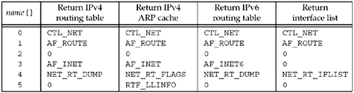

| [ Team LiB ] |
|
18.4 sysctl OperationsOur main interest in routing sockets is the use of the sysctl function to examine both the routing table and interface list. Whereas the creation of a routing socket (a raw socket in the AF_ROUTE domain) requires superuser privileges, any process can examine the routing table and interface list using sysctl.
This function uses names that look like SNMP management information base (MIB) names. Chapter 25 of TCPv1 talks about SNMP and its MIB in detail. These names are hierarchical. The name argument is an array of integers specifying the name, and namelen specifies the number of elements in the array. The first element in the array specifies which subsystem of the kernel the request is directed to. The second element specifies some part of that subsystem, and so on. Figure 18.11 shows the hierarchical arrangement, with some of the constants used at the first three levels. Figure 18.11. Hierarchical arrangement of sysctl names.
To fetch a value, oldp points to a buffer into which the kernel stores the value. oldlenp is a value-result argument: When the function is called, the value pointed to by oldlenp specifies the size of this buffer, and on return, the value contains the amount of data stored in the buffer by the kernel. If the buffer is not large enough, ENOMEM is returned. As a special case, oldp can be a null pointer and oldlenp a non-null pointer, and the kernel can determine how much data the call would have returned and returns this size through oldlenp. To set a new value, newp points to a buffer of size newlen. If a new value is not being specified, newp should be a null pointer and newlen should be 0. The sysctl man page details all the various system information that can be obtained with this function: information on the filesystems, virtual memory, kernel limits, hardware, and so on. Our interest is in the networking subsystem, designated by the first element of the name array being set to CTL_NET. (The CTL_xxx constants are defined by including the <sys/sysctl.h> header.) The second element can then be as follows:
When the second element of the name array is AF_ROUTE, the third element (a protocol number) is always 0 (since there are no protocols within the AF_ROUTE family, as there are within the AF_INET family, for example), the fourth element is an address family, and the fifth and sixth levels specify what to do. We will summarize this in Figure 18.12. Figure 18.12. sysctl information returned for route domain. Three operations are supported, specified by name [4]. (The NET_RT_xxx constants are defined by including the <sys/socket.h> header.) The information returned by these four operations is returned through the oldp pointer in the call to sysctl. This buffer contains a variable number of RTM_xxx messages (Figure 18.2).
Example: Determine if UDP Checksums Are EnabledWe now provide a simple example of sysctl with the Internet protocols to check whether UDP checksums are enabled. Some UDP applications (e.g., BIND) check whether UDP checksums are enabled when they start, and if not, they try to enable them. Naturally, it takes superuser privileges to enable a feature such as this, but all we do now is check whether the feature is enabled or not. Figure 18.13 is our program. Figure 18.13 Check whether UDP checksums are enabled.route/checkudpsum.c
1 #include "unproute.h"
2 #include <netinet/udp.h>
3 #include <netinet/ip_var.h>
4 #include <netinet/udp_var.h> /* for UDPCTL_xxx constants */
5 int
6 main(int argc, char **argv)
7 {
8 int mib[4], val;
9 size_t len;
10 mib[0] = CTL_NET;
11 mib[1] = AF_INET;
12 mib[2] = IPPROTO_UDP;
13 mib[3] = UDPCTL_CHECKSUM;
14 len = sizeof(val);
15 Sysctl(mib, 4, &val, &len, NULL, 0);
16 printf("udp checksum flag: %d\n", val);
17 exit(0) ;
18 }
Figure 18.14. Information returned for sysctl, CTL_NET, NET_RT_IFLIST command.
Include system headers2–4 We must include the <netinet/udp_var.h> header to obtain the definition of the UDP sysctl constants. The two other headers are required for this header. Call sysctl10–16 We allocate an integer array with four elements and store the constants that correspond to the hierarchy shown in Figure 18.11. Since we are only fetching a variable and not setting a new value, we specify a null pointer for the newp argument to sysctl and a value of 0 for the newlen argument. oldp points to an integer variable of ours into which the result is stored and oldlenp points to a value-result variable for the size of this integer. The flag that we print will be either 0 (disabled) or 1 (enabled). |
| [ Team LiB ] |
|